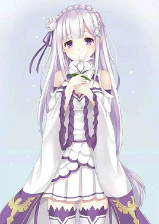
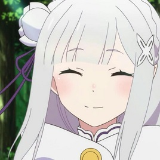
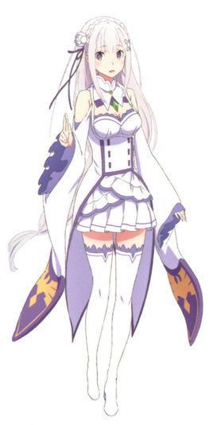
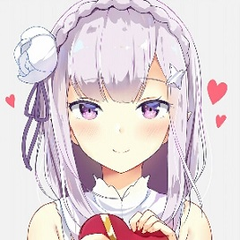

艾米莉亚
艾米莉亚（エミリア）是日本轻小说《Re：从零开始的异世界生活》及其衍生作品中的第一女主角，为作者最偏爱的角色（女儿一般的存在）。
有着银色长发和蓝紫瞳的半精灵少女，搭档为大精灵帕克。露格尼卡第42代王位候选人。因其为混血的银发半精灵，和曾经险些毁灭大陆的嫉妒魔女莎缇拉相貌相同，故被许多人所厌恶。
曾搭救了被小混混围殴的男主角菜月昴，格外善良温柔，本人却不肯坦率地承认这点，有时会有些天然呆。是菜月昴不断死亡所想要拯救的对象，也是菜月昴喜欢的女孩。
身份
爱蜜莉雅与“嫉妒魔女”莎缇拉的外貌一模一样。
根据爱蜜莉雅的姑姑（父亲的妹妹）菲露托娜所言，银发和紫绀色的眼眸遗传自亲生父亲的精灵家族，温柔的面容则继承自母亲。父亲的一族拥有的锐利凶恶的眼神，并没有继承。
在精灵部落里并没有她的亲生父母，自懂事开始就一直都由姑姑菲露托娜养育，对爱蜜莉雅而言菲露托娜就是她的母亲。
而因爱蜜莉雅与“嫉妒魔女”——莎缇拉的外貌一模一样的关系，精灵族的大家对她也是另眼相看，但并没有讨厌她。每隔一段时间怠惰司教都会带来物质给予菲露托娜和精灵群落的大家。
后来虚饰的魔女和强欲司教来袭，顺带引来了三大魔兽之一的黑蛇来袭击精灵群落。为了对抗强欲司教，怠惰司教强行融合了贤者交托给他的魔女因子觉醒了【不可视之手】，但依然不是强欲司教的对手，怠惰濒临死亡。在一旁观战的虚饰魔女使用权能改写了“让强欲司教与自己随行袭击精灵群落”的事实强制让强欲司教回去了。强欲司教所做成的一切对现实的干涉都被还原，怠惰身上的所有伤都被因“强欲司教不曾出现在这里”而还原了。
战斗的最后，因虚饰魔女使用权能【改写现实】，怠惰误杀了他最珍视的菲露托娜而精神崩溃。目睹这一切的爱蜜莉雅暴走了，爆发出超越虚饰魔女的魔力连气候都能改变的威力，但依旧不敌虚饰魔女。虚饰魔女无法达成目的【3】，就只好暂时撤退，临走前篡改了爱蜜莉雅的记忆，然后把精神崩溃怠惰司教带走了。随后爱蜜莉雅因持续不可控的魔力暴走连同自己一起冰封了整片艾利奥尔大森林，直到百年后被帕克救出，开始了正篇的故事。
爱蜜莉雅的父亲是精灵，母亲是【魔女】。亲。根据web第四章72可知帕克原本是人型的精灵，后与艾奇多娜达成契约改造成现在这幅模样，并由于契约限制的封印了真正的记忆和自身真正的目的直到条件达成才会解开。
【强欲魔女】艾姬多娜知道并认识爱蜜莉雅的生母，web小说中能让艾奇多娜表现出厌恶情感的对象就现在来说就几个，一个是【嫉妒魔女】及其本体沙缇娜，一个是爱蜜莉雅，还有爱蜜莉雅的生母。
作者偏爱
爱蜜莉雅为作者钦定的全作品第一美貌，被人疏远和极少人对其有恋爱感情的原因之一是由于过于漂亮，前者出自2013年作者于web连载的人物介绍资料，且在web连载时期换穿过多种服饰于前三章有常服、私服、睡衣。于第四章有礼服。于第五章有浴衣、婚纱。
于2016年8月份的台湾漫博会，在上午的漫博会会场及后台采访，晚上的安利美特会场，三个场合被问及原作最喜欢的角色，均坦承是爱蜜莉雅，作者来台湾参加漫博会时所穿衣物为爱蜜莉雅的官方痛衫，不仅如此，在ASK中作者多次表示过对银发的病态痴迷，曾发表过多次银发控倾向言论，并表示银发是世界第一可爱萌属性，有这一点就够了。在ASK中被问现实中最想要的小说中的物品是爱蜜莉雅穿过的过膝袜。
表示re0的创作主题即为“无能男主角拼命吐血地追求银发女主角并盼得她回头”出自文库版第一卷，第二卷后记，在ASK中也表明，如果说有一个角色是因其存在而才让他有为其创作故事的欲望，那个角色是银发的女主角，以及，创作re0故事的产生源头是“被无能男主角所帮助的银发女主角”。
推特头像为爱蜜莉雅的第一卷封面头像，且web连载的笔名和推特名字均为鼠色猫，而作品中符合其描述的角色为帕克，帕克对莉雅的感情就无需赘述了，在ASK中作者也曾隐晦提及自己与帕克的关系。
虽然作者在作品中设定她被世间所有人厌恶着，害怕着，然而作品中很多有名有姓甚至不乏戏份较多或实力高强的人在第一面对她的好感度却都很高（无论出自什么缘故），有部分甚至愿为她付出性命：
1、艾利欧尔大森林的精灵们，以青年亚奇为代表：把幼年的爱蜜莉雅奉若公主般照顾，黑蛇来袭时为救爱蜜莉雅，亚奇自断腿部留下断后让莉雅逃跑。
2、怠惰司教贝迪尔提乌斯：见到幼年的爱蜜莉雅时感动地当场跪地流泪，为保护她宁愿舍命发动怠惰因子对抗强欲司教雷格鲁斯。
3、强欲司教雷格鲁斯：于普利斯黛拉见到成年后的艾米莉亚第一面便被美貌所迷，强占她欲使其成为79号妻子，之前79号的位置为某人保留一直空缺，在被拒绝后也是以其他53位妻子的性命做要挟让她屈服，他遇到雷姆和克鲁修车队时也是采取攻击，断掉了克鲁修手臂。
4、帕克：（不多解释，长月达平，是不是你？！）
5、菜月昴（不多解释，老贼女婿，活该被虐）。
6、莉莉安娜：云游的歌姬，见到爱蜜莉雅的第一面便被美貌折服，惊叹到完全不像人类，并现场创作了一首歌曲赞叹其美貌虽然注意到了尖耳朵但完全不介意其与嫉妒魔女相同的形象。
7、克林特：萝莉控管家，见到其第一面便对爱蜜莉雅敬如上宾，赞叹其灵魂的纯洁，称赞她的灵魂有一股清凉感一眼便看穿爱蜜莉雅灵魂和精神依然是萝莉级别，恐怖的萝莉控。
8、安妮罗泽：罗兹瓦尔的表亲，9岁的萝莉大小姐，早熟，对爱蜜莉雅一见钟情且独占欲异常强烈，视菜月昴为情敌关系，声优与贝阿子同为新井里美（误）。
以上八点综合起来都可以做一个逆后宫的少女向galgame了。
是作者的个人爱好口味集大成者，包括且不限于银发（碾压其他一切因素），反差萌（萝莉心少女身），天使，残念系（唱歌糟糕，不会料理，不擅数字），对于读者提出的“女主角是否反应了他个人的喜好口味”质疑表示“只有银发完全是我个人口味，而其他的方面也并没有你想的那么严重”也就是说还是承认了。
除第一章初期被猎肠者杀害，直到如今完全没有受到严重物理外伤、遭受肉体暴力的描写，始终保持着形象的完好，死亡时没有外伤，捏碎心脏时外表只有呕血，仅用一行字交代结果（且每次都有其他主要角色陪葬），被大兔吞食，被夏乌拉削去头部，都仅用一句话交代结果且其他所有角色也均遭受此结局，与其他角色相比可以说从来没有在肉体上遭受过痛苦（蕾姆被怠惰拧断过四肢，贝蒂被猎肠划开过肚子，佩特拉被挖掉过双眼，拉姆被地龙咬碎过头部，安娜被切开过腹部，克鲁修被龙血诅咒污染过半身，就连普莉希拉也被愤怒司教用锁链抽在脸上过）。
出身和血统非同凡人，满满的热血主角气息随时可以开各种外挂，血统论和背景论的受益人，有一对出身奇高但就是情报未明的神龙见首不见尾的父母（傲天系血统），跟剧情最关键人物嫉妒魔女莎提拉有直接关系（长相完全一样），跟剧情核心谜题挂钩的封印在全世界只有两个人能解开，她是其中之一，剧情核心人物艾姬多娜全世界就憎恨三个人，她也是其中之一，有着极大的身世背景谜团。潜力无穷，与料理、歌唱等极其糟糕的天赋相反，在战斗方面的天赋极为惊人年幼7岁时就有超强的微精灵亲和性，能与之沟通，微精灵自发地会去做她所希望的事，魔力近乎无限，官设魔力量最高者，魔力储备令魔女自叹不如，罗兹瓦尔需要提前准备才能发动的天候改变魔法，幼年的爱蜜莉雅只需暴走便可，且导致气候改变的影响持续了近百年还未消去。近身格斗的体术极高，能在十多个手持弓弩和砍刀的大汉中仅靠掌打、背投和脚踹就无伤将其全数击倒，于第五章中，仅靠一年时间取回的部分战斗本领便可单独迎战愤怒司教，虽然败北，但在其后与强欲司教的战斗中展现出全方面的战斗适应性，能AOE、能回血、能辅助、能侦查、能后勤、能补魔、能格斗、能输出、能控场。剑术、体术、法术、精灵术皆可运用自如，可随时通过血统、背景和回忆起过去的某些本领（幼时的自己反而是实力最强的时期）而开挂，搭配台词“我想起来了！”口味更佳（误）。